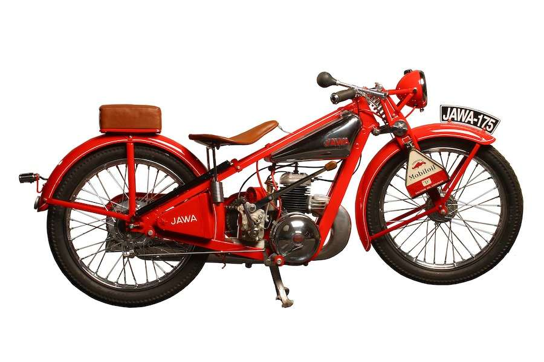

Welcome to Moto Head's Garage
Owning a JAWA is like holding a piece of motorcycling history in your hands. It’s an experience that transcends generations. You don’t just ride a JAWA; you become part of its enduring legacy.
Vintage Bike Gallery


1932 JAWA 175
- Engine: 175cc, Air-cooled, two-stroke, single-cylinder
- Speed: Approximately 80 km/h (50 mph)
- Transmission: 3-speed manual
- Electrics: Initially a magneto system
- Suspension: frameGirder fork, Front. Rigid, Rear
- Tires: 19-inch wheels
- Weight (dry): Around 85 kg (187 lbs)
1967 Jawa 350 V4 Type G73A
- Engine: 345cc water-cooled 2-stroke rotary valve 30-degree V4
- Speed: 162mphCarburetion: Four 27mm
- Transmission: 7-speed, chain final drive
- Electrics: 12v, electronic CDI ignition
- Suspension: Telescopic fork front, dual Girling shocks w/adjustable preload rear
- Tires: 2.75 x 18in front, 3.5 x 18in rear
- Weight (dry): 303.6lb (138kg)
1950 JAWA 353
- Engine: 250cc, Air-cooled, single-cylinder, two-stroke
- Speed: Around 100-110 km/h (62-68 mph)
- Transmission: 4-speed manual, chain final drive
- Electrics: Originally a magneto system, some models may have been converted to electronic ignition
- Suspension: Telescopic fork front w/Swingarm with dual shock absorbers rear
- Tires: 19-inch wheels
- Weight (dry): Approximately 130 kg (286 lbs)